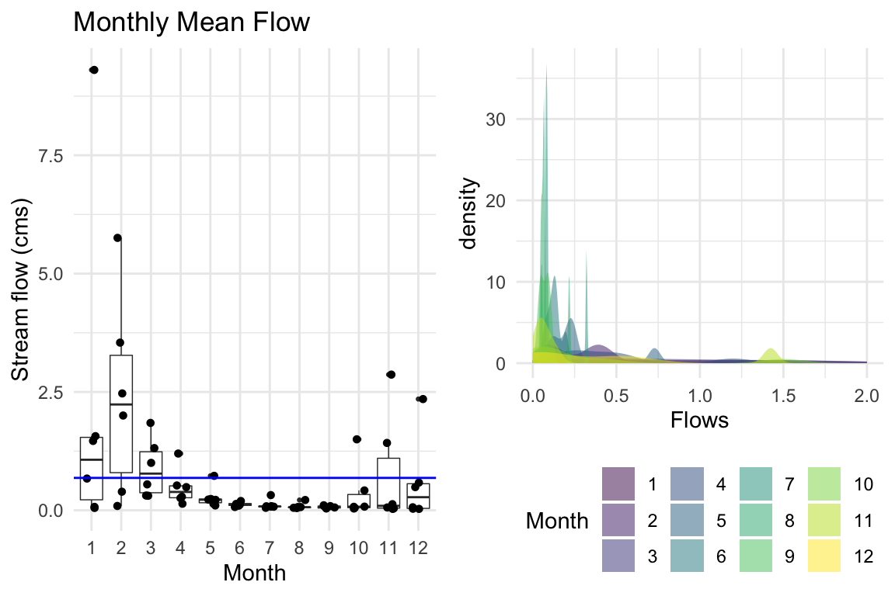
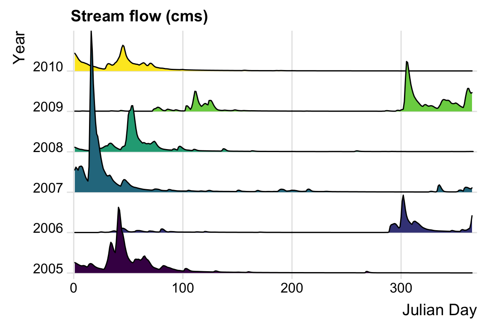
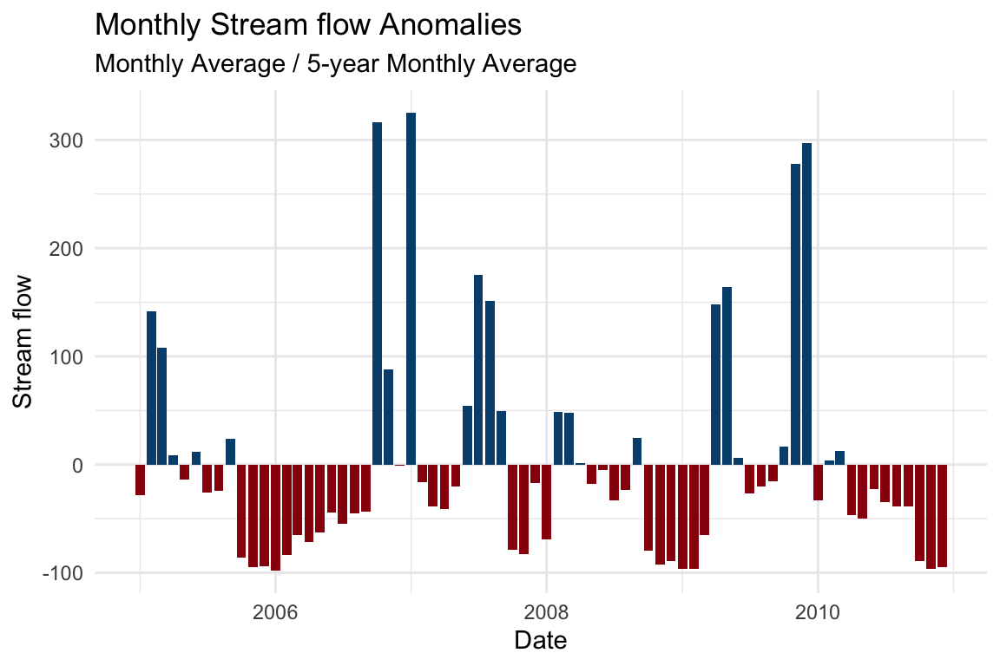
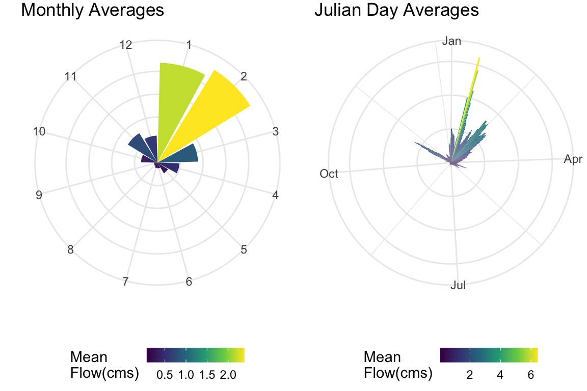
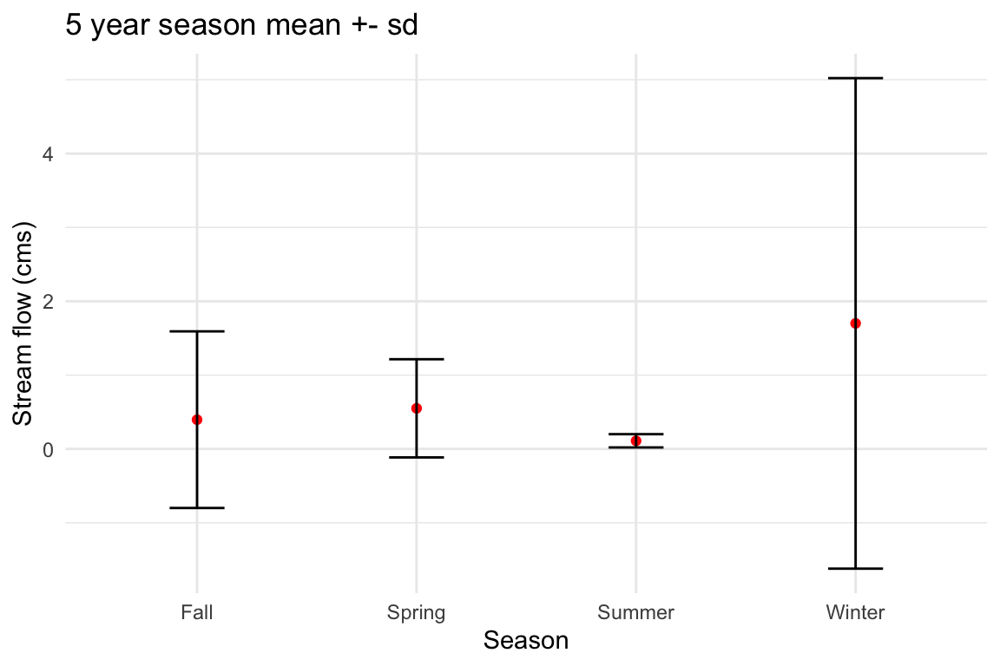
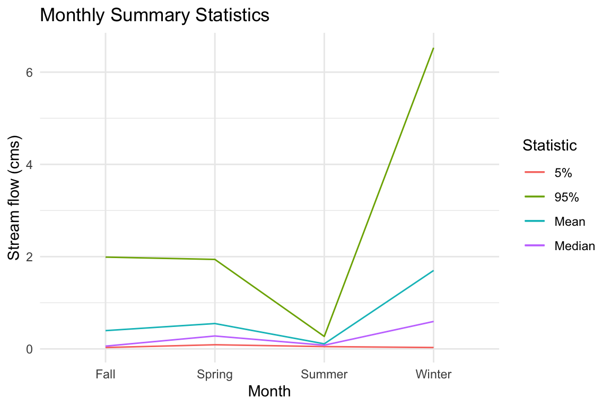
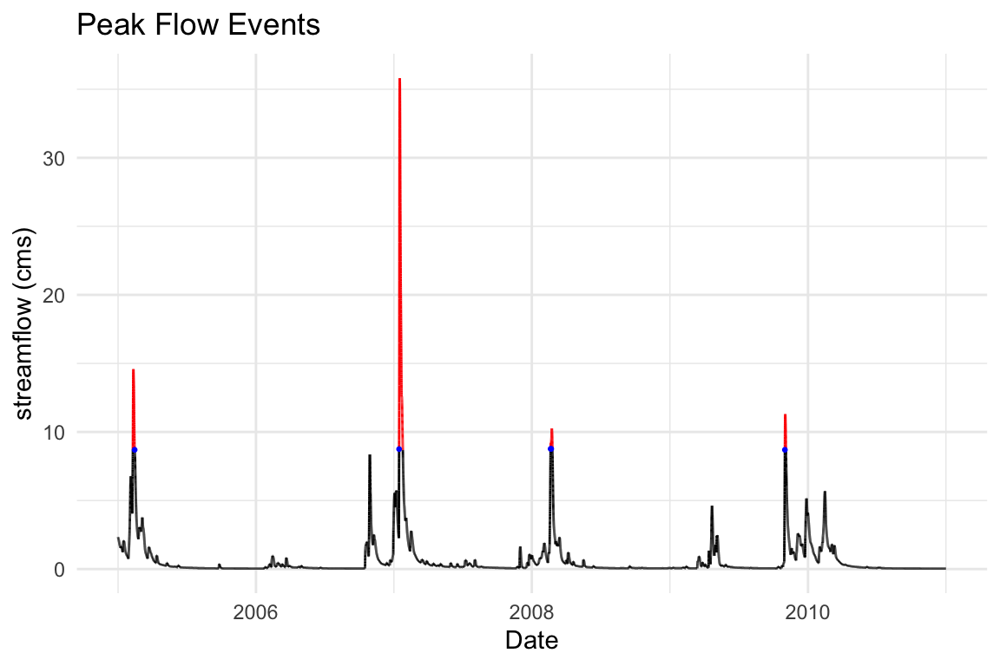
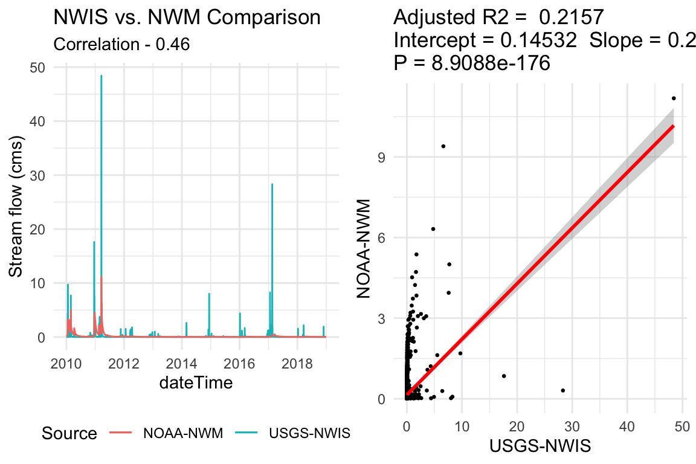
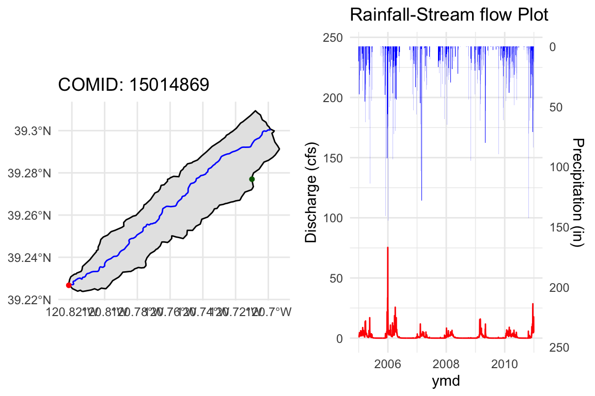

Hourly time steps are not always ideal. The split_time function breaks the hourly forecast stamps in into temporal units. If you want to work off your own groupings start there!
Otherwise the aggregate_* family provides tools for passing custom functions to standard grouping calls like ‘y’ (year), ‘m’ month, or ‘ymd’ (year-month-day). An example to get daily flow averages would be:
flows = readNWMdata(comid = 101) aggregate_ymd(flows, fun = mean)
The rest of this vignette show different use cases of the aggregate_* family and some visualization examples.
National Water Model data is stored (and extracted) at an hourly time-step. Often we want data at a different time aggregate (say daily or monthly).
R’s dplyr package provides useful tools for grouping and summarizing data. Equally lubridate offers convenient tools for dealing with date and time data.
The nwmHistoric package provides a family of aggregation methods that leverage these tool kits to allow users to pass unique functions to a specific grouping calls. These calls follow the function signature form of aggregate_* where * represents the grouping using common date (and hydro-specific) symbols seen below.
| Symbol | Aggregate |
|---|---|
| y | year |
| m | month |
| d | day |
| j | julian day |
| s | season |
| wy | water year |
| dowy | day of water year |
These date symbols can be combined to provide useful, common aggregation patterns. 14 of these are included in historic aggregation functions listed below where * represents the key word aggregate:
| Aggregate Unit Symbol | |
|---|---|
| *_record | Entire Record |
| *_y | Year |
| *_m | Month |
| *_j | Julian Day |
| *_s | season |
| *_WY | Water Year |
| *_ym | Year and Month |
| *_yj | Year and Julian day |
| *_ymd | Day of the Year |
| *_ys | Year and Season |
| *_wym | Water Year and Month |
| *_wyj | Water Year and Julian Day |
| *_wymd | Day of the Water Year |
| *_wys | Water Year and Season |
| *_dowy | Day of Water Year |
To see this family of functions in action, lets first load some hourly data for NHD COMID 101 over a 5 year period.
We will use these this flow data for all visuals in the vignette.
library(nwmHistoric) flows = readNWMdata(comid = 101, startDate = "2005-01-01", endDate = "2010-12-31")
First lets group the hourly flow data to monthly averages by year by calling aggregate_ym (ym = year/month) and passing mean as the function:
# Aggregate hourly flows to monhtly averages by year monthly = aggregate_ym(flows, 'mean')
# Plot g1 = ggplot(data = monthly,aes(x = as.factor(month), y = flow)) + geom_boxplot(lwd = .25, outlier.size = .5) + geom_jitter(position=position_jitter(0.2), cex=1.2) + geom_hline(yintercept = mean(flows$flow), color = 'blue') + theme_minimal() + labs(title = "Monthly Mean Flow", x = "Month", y = "Stream flow (cms)") g2 = ggplot(monthly, aes(flow, fill = as.factor(month))) + geom_density(alpha=0.5, color = "transparent") + scale_fill_viridis_d() + theme_minimal() + xlim(c(0,2)) + labs(title="", x="Flows", fill="Month") + theme(legend.position = "bottom") grid.arrange(g1 ,g2, nrow = 1)

Another cool visualization of streamflow data is ridge plots! These plots require data to be grouped by year (y-axis) and by Julian Day (x-axis), while the ridge height represents the streamflow conditions.
library(ggridges) # Aggregate by year and Julien Day yj = aggregate_yj(flows, fun = 'mean')
## Plot ggplot(yj, aes(x = julian, y = factor(year), height = flow, fill = factor(year)), color = 'white') + geom_density_ridges(scale = 4, stat = "identity") + scale_y_discrete(expand = c(0.01, 0)) + scale_x_continuous(expand = c(0.01, 0)) + theme_ridges() + scale_fill_viridis_d() + theme(legend.position = "none") + labs(y = "Year", x = "Julian Day", title = "Stream flow (cms)")

a = aggregate_ym(flows) am = aggregate_m(flows) %>% rename(avg = flow) all = merge(a, am, by = 'month') %>% mutate(ano = (flow*100/avg)-100, sign = ifelse(ano > 0, "#034e7b", "#99000d"))
ggplot(all, aes(ym, ano, fill = ano)) + geom_bar(stat = "identity", fill = all$sign, show.legend = FALSE) + theme_minimal() + labs(title = "Monthly Stream flow Anomalies", subtitle = "Monthly Average / 5-year Monthly Average", x = "Date", y = "Stream flow")

Alternatively, we could ignore the year grouping and look at the 5-year average across months and Julian days:
flowM = aggregate_m(flows, mean) flowJ = aggregate_j(flows, mean)
# Plot g1 = ggplot() + geom_col(data=flowM, aes(x= factor(month), y=flow, fill=flow), show.legend = T)+ theme_minimal() + labs(y="", x="", title = "Monthly Averages")+ theme(plot.background = element_blank(), legend.position = 'bottom', legend.key.height = unit(.15,units = "in"), legend.key.width = unit(.2, units = "in"), panel.border = element_blank(), axis.text.y = element_blank(), plot.margin = unit(c(0, 0, 0 ,0), "mm")) + scale_fill_viridis_c("Mean \nFlow(cms)") + coord_polar() g2 = ggplot() + geom_col(data=flowJ, aes(x=julian, y=flow, fill=flow), show.legend = T)+ theme_minimal() + labs(y="", x="", title = "Julian Day Averages") + scale_x_continuous(breaks=c(1, 90, 180, 270), labels=c("Jan","Apr","Jul","Oct")) + theme(plot.background = element_blank(), legend.position = 'bottom', legend.key.height = unit(.15,units = "in"), legend.key.width = unit(.2, units = "in"), panel.border = element_blank(), axis.text.y = element_blank(), plot.margin = unit(c(0, 0, 0 ,0), "mm")) + scale_fill_viridis_c("Mean \nFlow(cms)") + coord_polar() grid.arrange(g1,g2, nrow = 1)

So far we have only looked at passing mean to aggregate_* but multiple functions can also be passes as a vector. The following code returns the seasonal (s) mean and standard deviation.
# Aggregate by season seasons = aggregate_s(flows, fun = c('mean', 'sd'))
# Plot ggplot(data = seasons, aes(x = season, y = flow_mean)) + geom_line() + geom_point(color = "red") + geom_errorbar(aes(x=season, ymin=flow_mean - flow_sd, ymax=flow_mean + flow_sd), width=0.25) + theme_minimal() + labs(title = "5 year season mean +- sd", x = "Season", y = "Stream flow (cms)")

Equally important, you are not limited to base R functions. Instead you can pass any function to fun that works over a vector of streamflow elements. In the code below we ask for the 5th and 95th percentile along with some other summary statistics:
# Summary Statistics myFun = aggregate_s(flows, fun = c(high = function(x){quantile(x,.95)}, median = median, mean = mean, low = function(x){quantile(x,.05)}))
# Plot ggplot(data = myFun)+ geom_line(aes(x = factor(season), y = flow_low, color = '5%', group = 1)) + geom_line(aes(x = factor(season), y = flow_median, color = "Median", group = 1)) + geom_line(aes(x = factor(season), y = flow_mean, color = "Mean", group = 1)) + geom_line(aes(x = factor(season), y = flow_high, color = "95%", group = 1)) + theme_minimal() + labs(title = "Monthly Summary Statistics", x = "Month", y = "Stream flow (cms)", color = "Statistic")

myFun = aggregate_record(flows, fun = c(high = function(x){quantile(x,.99)})) all = flows %>% mutate(col=ifelse(flow >= myFun$flow_high, "red", "black")) sub = filter(all, col == "red") %>% mutate(lag = time - lag(time)) %>% filter(lag != 1, !is.na(lag))
ggplot(data = all, aes(x = time, y = flow)) + geom_line(color = all$col, group = 1) + geom_point(data = sub, aes(x = time, y = flow), color = "blue", size = .5) + theme_minimal() + labs(title = "Peak Flow Events", subtilte = 'Flows Exceeding 99th Percentile', y = "streamflow (cms)", x = "Date")

library(dataRetrieval) site = '11120000' nwm = readNWMdata(siteNumber = site, startDate = "2010-01-01", endDate = "2018-12-31") %>% aggregate_ymd() nwis = readNWISdv(siteNumber = site, parameterCd = '00060', startDate = "2010-01-01", endDate = "2018-12-31") %>% renameNWISColumns() nwm$nwis = nwis$Flow /35.314666212661
g1 = ggplot(data = nwm) + geom_line(aes(x = ymd, y = nwis , color = 'USGS-NWIS')) + geom_line(aes(x = ymd, y = flow, color = "NOAA-NWM" )) + theme_minimal() + labs(title = "NWIS vs. NWM Comparison", subtitle = paste0("Correlation - ", round(cor(nwm$flow, nwm$nwis), 2)), x = 'dateTime', y = "Stream flow (cms)", color = "Source") + theme(legend.position = 'bottom')
fit = lm(flow ~ nwis, data = nwm)
g2 = ggplot(fit$model, aes_string(x = names(fit$model)[2], y = names(fit$model)[1])) + geom_point(size = .5) + stat_smooth(method = "lm", col = "red") + labs(title = paste("Adjusted R2 = ",signif(summary(fit)$adj.r.squared, 5), "\nIntercept =",signif(fit$coef[[1]],5 ), " Slope =",signif(fit$coef[[2]], 5), "\nP =",signif(summary(fit)$coef[2,4], 5)), x = "USGS-NWIS", y = "NOAA-NWM") + theme_minimal() grid.arrange(g1,g2, nrow = 1)

In this last example we try to ‘put it all together’. Starting with a GSODR rainfall gage, we want to:
download some rainfall data identify the associated NHD Catchment, get some daily flow estimates for that catchment, make a map and rainfall-streamflow plot
library(GSODR) library(sf) climdata <- get_GSOD(station = "725845-23225" , years = c(2005:2010)) %>% select(NAME, LONGITUDE, LATITUDE, ymd = YEARMODA, PRCP) pt <- st_as_sf(climdata[1,], coords = c("LONGITUDE", "LATITUDE"), crs = 4269) catch = discover_nhd(pt, feature = 'catchment') fl = discover_nhd(pt, feature = 'flowline') out = discover_nhd(pt, feature = 'outlet') flowsD = readNWMdata(comid = out$comid, startDate = "2005-01-01", endDate = "2010-12-31") %>% aggregate_ymd() df = merge(flowsD, climdata) %>% filter(!is.na(PRCP))
maxRange <- 1.1*(max(df$PRCP) + max(df$flow)) g1 = ggplot() + geom_sf(data = catch, fill = 'gray90', color = "black") + geom_sf(data = fl, col = 'blue') + geom_sf(data = out, color = 'red', size = 1.25) + geom_sf(data = pt, color = 'darkgreen', size = 1.25) + theme_minimal() + theme(legend.position = "NA") + labs(title = paste('COMID:', df$comid)) g2 = ggplot(data = df, aes(x = ymd)) + geom_tile(aes(y = -1*(PRCP/2-maxRange), height = PRCP, width = 1.5), fill = "blue") + geom_line(aes(y = flow), color = "red") + scale_y_continuous(name = "Discharge (cfs)", sec.axis = sec_axis(trans = ~-1*(.-maxRange), name = "Precipitation (in)" )) + theme_minimal() + labs(title = "Rainfall-Stream flow Plot") grid.arrange(g1,g2, nrow = 1)
